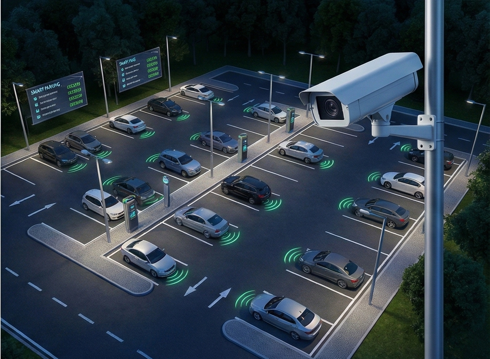
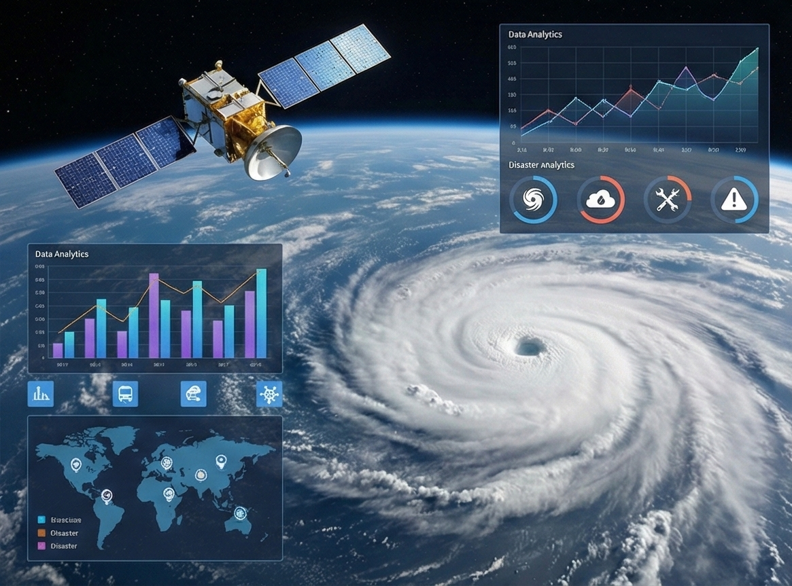
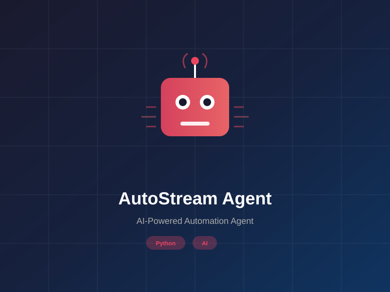
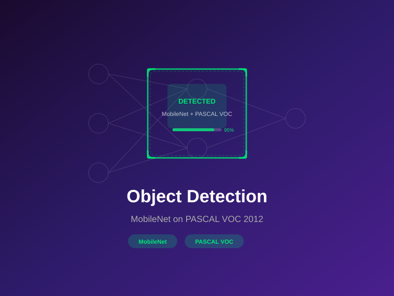
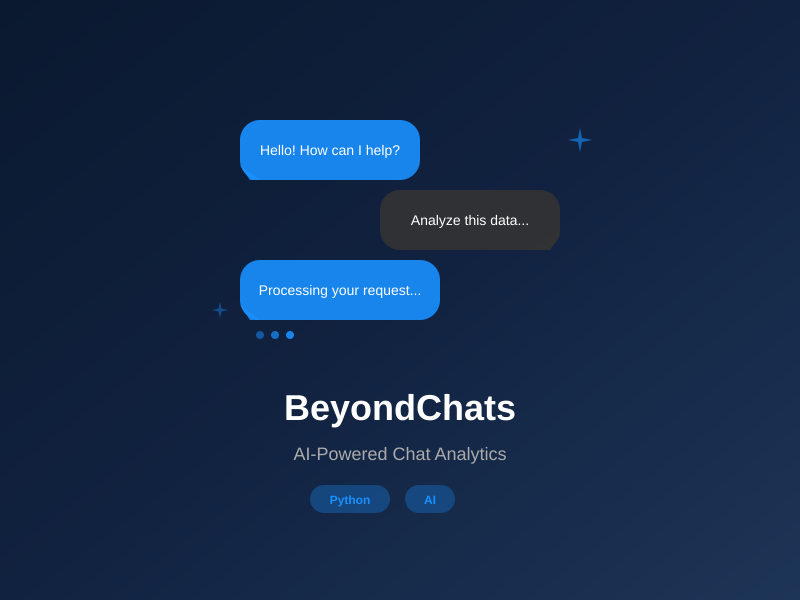
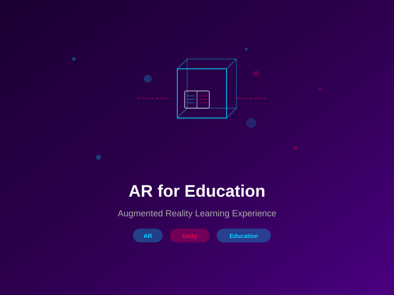
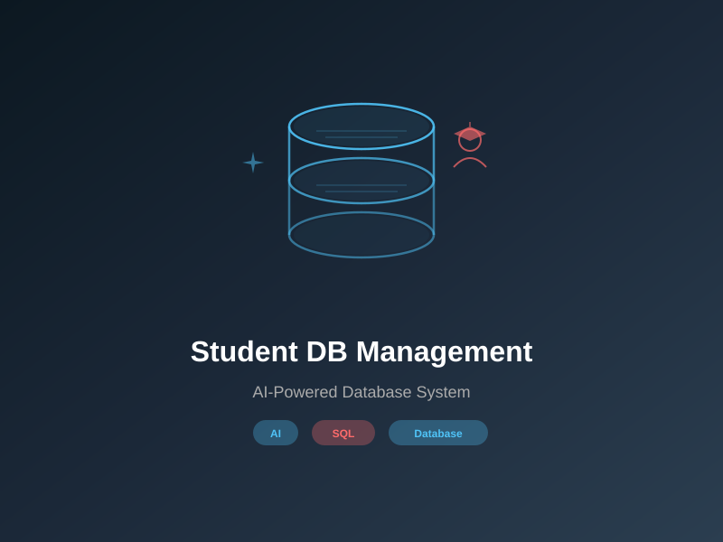

A collection of my projects spanning AI, Machine Learning, Computer Vision, and more.
BHAVESH AI VOICE CLONER
Built a zero-shot TTS system with 0.5B Llama backbone for real-time voice cloning from just seconds of audio.
Developed using Python, Streamlit, Transformers, and LLMs. Features include real-time voice synthesis, minimal audio input requirements, and seamless integration with modern AI frameworks.

SMART PARKING & SURVEILLANCE SYSTEM
Achieved 97.47% accuracy in real-time parking detection, exceeding 90% industry benchmark.
Built using Python, YOLO, and Computer Vision for intelligent parking space monitoring. Features real-time detection, automated alerts, and comprehensive surveillance capabilities.

DISASTER IMPACT ANALYZER
Developed multi-modal AI system for disaster prediction with 3-hour predictive window.
Built using TensorFlow, Keras, Streamlit, and OpenCV. Features include real-time disaster assessment, early warning systems, and multi-modal data analysis for comprehensive impact prediction.
ANOMALY DETECTION IN SURVEILLANCE
GAN-based AI model for detecting suspicious activities in CCTV feeds with 92% accuracy.
Built using Python, GANs, and Machine Learning. The system analyzes video feeds in real-time to identify anomalous behavior patterns and trigger security alerts.

AUTOSTREAM AGENT
AI-powered automation agent for streamlining workflows and intelligent task execution.
Built using Python and AI frameworks. Features automated streaming pipelines, intelligent decision-making, and seamless integration with modern automation tools.
AI TRAVEL PLANNER
AI-powered travel planner creating personalized itineraries using Gemini AI.
Built with Streamlit and Python, powered by Google Gemini AI. Creates detailed personalized travel itineraries with recommendations for attractions, dining, and activities.

OBJECT DETECTION - MOBILENET
Object detection model using MobileNet backbone trained on PASCAL VOC 2012 dataset.
Implementation of an efficient object detection pipeline using MobileNet architecture. Trained and evaluated on the PASCAL VOC 2012 benchmark for multi-class object recognition.

BEYONDCHATS
AI-powered chat analytics and intelligent conversational data processing platform.
Built using Python for analyzing and processing chat data with AI-driven insights. Features intelligent data extraction, analytics dashboards, and automated response analysis.

AR FOR EDUCATION
Augmented reality application for enhancing educational experiences with immersive 3D content.
Developed an AR-based learning platform that overlays 3D educational content in real-world environments. Enhances student engagement through interactive and immersive learning experiences.
PYTHON CHATBOT
Intelligent conversational chatbot built with Python for natural language interactions.
Built using Python with NLP capabilities. Features natural language understanding, context-aware responses, and an extensible architecture for custom conversational flows.

STUDENT DB MANAGEMENT
AI-powered student database management system for automated record processing.
Utilizes artificial intelligence for automating data entry, updating records, and generating reports. Streamlines student information management with intelligent automation.